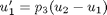
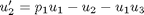
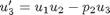
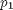
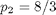
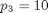
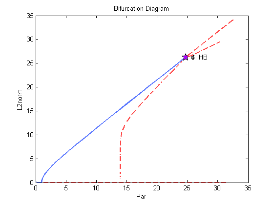

The Lorenz Equations (Demo : lrz)
This demo computes two symmetric homoclinic orbits in the Lorenz equations
: ,
: ,
: .
- Here  is the free parameter, and , .
- The two homoclinic orbits correspond to the final, large period orbits on the two periodic solution families.
Create continuation object and set initial conditions.
a{1}=auto;
Print function file to screen.
type(a{1}.s.FuncFileName);
function [f,o,dfdu,dfdp]= func(par,u,ijac) % % equations file for lorenz demo lrz % f=[]; o=[]; dfdu=[]; dfdp=[]; f(1)= par(3) * (u(2)- u(1)); f(2)= par(1)*u(1) - u(2) - u(1)*u(3); f(3)= u(1)*u(2) - par(2)*u(3);
Set initial conditions.
[a{1}.s.Par0,a{1}.s.U0,a{1}.s.Out0]=stpnt;
Set constants.
a{1}.c=clrz1(a{1}.c);
Run equilibrium continuation.
a{1}=runauto(a{1});
--------------- DYNAMICAL SYSTEMS TOOLBOX ---------------------
USER NAME : ECOETZEE
DATE : 26/10/2010 10:10:28
<
BR PT TY LAB PAR(01) L2-NORM U(01) U(02) U(03)
1 1 EP 1 0.00000E+00 0.00000E+00 0.00000E+00 0.00000E+00 0.00000E+00
1 5 BP 2 1.00000E+00 0.00000E+00 0.00000E+00 0.00000E+00 0.00000E+00
1 13 EP 3 3.16000E+01 0.00000E+00 0.00000E+00 0.00000E+00 0.00000E+00
BR PT TY LAB PAR(01) L2-NORM U(01) U(02) U(03)
2 42 HB 4 2.47368E+01 2.62685E+01 7.95602E+00 7.95602E+00 2.37368E+01
2 45 EP 5 3.26008E+01 3.41635E+01 9.17980E+00 9.17980E+00 3.16008E+01
BR PT TY LAB PAR(01) L2-NORM U(01) U(02) U(03)
2 42 HB 6 2.47368E+01 2.62685E+01 -7.95602E+00 -7.95602E+00 2.37368E+01
2 45 EP 7 3.26008E+01 3.41635E+01 -9.17980E+00 -9.17980E+00 3.16008E+01
Total Time 0.938E-01
>
Create second object for restart
a{2}=auto;
a{2}.f8=a{1}.f8;
a{2}.c=clrz2(a{1}.c);
Compute periodic solutions; the final orbit is near-homoclinic from label 4
a{2}=runauto(a{2});
--------------- DYNAMICAL SYSTEMS TOOLBOX ---------------------
USER NAME : ECOETZEE
DATE : 26/10/2010 10:10:29
<
BR PT TY LAB PAR(01) L2-NORM MAX U(01) MAX U(02) MAX U(03) PERIOD
4 2 8 2.47263E+01 2.62550E+01 8.24078E+00 8.35402E+00 2.42325E+01 6.53196E-01
4 4 9 2.46221E+01 2.61217E+01 8.87099E+00 9.25396E+00 2.52683E+01 6.56815E-01
4 6 10 2.43598E+01 2.57862E+01 9.55937E+00 1.02673E+01 2.62866E+01 6.66114E-01
4 8 11 2.38815E+01 2.51733E+01 1.02649E+01 1.13402E+01 2.71688E+01 6.83815E-01
4 10 12 2.31354E+01 2.42151E+01 1.09349E+01 1.23940E+01 2.77796E+01 7.13505E-01
4 12 13 2.20780E+01 2.28511E+01 1.15132E+01 1.33396E+01 2.79816E+01 7.60644E-01
4 14 14 2.06702E+01 2.10193E+01 1.19409E+01 1.40738E+01 2.76380E+01 8.35069E-01
4 16 15 1.88821E+01 1.86471E+01 1.21484E+01 1.44796E+01 2.66089E+01 9.57569E-01
4 18 16 1.67353E+01 1.56405E+01 1.20536E+01 1.44257E+01 2.47832E+01 1.18330E+00
4 20 17 1.48138E+01 1.23916E+01 1.17081E+01 1.39788E+01 2.27276E+01 1.62929E+00
4 22 18 1.39678E+01 9.14991E+00 1.14909E+01 1.36783E+01 2.17209E+01 2.78130E+00
4 24 19 1.39266E+01 5.88316E+00 1.14637E+01 1.36364E+01 2.16632E+01 6.70329E+00
4 26 20 1.39266E+01 4.27612E+00 1.14814E+01 1.36634E+01 2.16547E+01 1.26885E+01
4 28 21 1.39266E+01 2.60523E+00 1.14798E+01 1.36596E+01 2.16716E+01 3.41837E+01
4 30 22 1.39265E+01 1.77732E+00 1.14801E+01 1.36531E+01 2.15700E+01 7.34476E+01
4 32 23 1.39266E+01 1.14209E+00 1.14546E+01 1.36068E+01 2.16277E+01 1.77872E+02
4 34 24 1.39266E+01 7.31857E-01 1.14815E+01 1.36619E+01 2.16442E+01 4.33169E+02
4 35 EP 25 1.39266E+01 6.29547E-01 1.14802E+01 1.36631E+01 2.16345E+01 5.85401E+02
Total Time 0.509E+01
>
Create third object for restart
a{3}=auto;
a{3}.f8=a{1}.f8;
a{3}.c=clrz3(a{3}.c);
Compute the symmetric periodic solution family from label 6
a{3}=runauto(a{3});
--------------- DYNAMICAL SYSTEMS TOOLBOX ---------------------
USER NAME : ECOETZEE
DATE : 26/10/2010 10:10:34
<
BR PT TY LAB PAR(01) L2-NORM MAX U(01) MAX U(02) MAX U(03) PERIOD
6 2 8 2.47263E+01 2.62550E+01 -7.66589E+00 -7.55614E+00 2.42325E+01 6.53196E-01
6 4 9 2.46221E+01 2.61217E+01 -6.98291E+00 -6.63767E+00 2.52683E+01 6.56815E-01
6 6 10 2.43598E+01 2.57862E+01 -6.16259E+00 -5.57720E+00 2.62866E+01 6.66114E-01
6 8 11 2.38815E+01 2.51733E+01 -5.21877E+00 -4.41802E+00 2.71688E+01 6.83815E-01
6 10 12 2.31354E+01 2.42151E+01 -4.18398E+00 -3.22592E+00 2.77796E+01 7.13505E-01
6 12 13 2.20780E+01 2.28511E+01 -3.10528E+00 -2.07754E+00 2.79816E+01 7.60644E-01
6 14 14 2.06702E+01 2.10193E+01 -2.04466E+00 -1.05682E+00 2.76380E+01 8.35069E-01
6 16 15 1.88821E+01 1.86471E+01 -1.08612E+00 -2.53862E-01 2.66089E+01 9.57569E-01
6 18 16 1.67353E+01 1.56405E+01 -3.58904E-01 2.34383E-01 2.47832E+01 1.18330E+00
6 20 17 1.48138E+01 1.23916E+01 -4.02246E-02 3.50485E-01 2.27276E+01 1.62929E+00
6 22 18 1.39678E+01 9.14991E+00 -1.09822E-04 3.28597E-01 2.17209E+01 2.78130E+00
6 24 19 1.39266E+01 5.88316E+00 2.71087E-12 3.26551E-01 2.16632E+01 6.70329E+00
6 26 20 1.39266E+01 4.27612E+00 3.10163E-11 3.26608E-01 2.16547E+01 1.26885E+01
6 28 21 1.39266E+01 2.60523E+00 1.78906E-10 3.26143E-01 2.16716E+01 3.41837E+01
6 30 22 1.39265E+01 1.77732E+00 2.29274E-15 3.16121E-01 2.15700E+01 7.34476E+01
6 32 23 1.39266E+01 1.14209E+00 6.72816E-13 3.25737E-01 2.16277E+01 1.77872E+02
6 34 24 1.39266E+01 7.31857E-01 1.18433E-09 3.26767E-01 2.16442E+01 4.33169E+02
6 35 EP 25 1.39266E+01 6.29547E-01 8.84302E-12 3.26839E-01 2.16345E+01 5.85401E+02
Total Time 0.512E+01
>
Create fourth object for restart
a{4}=auto;
a{4}.f8=a{3}.f8;
a{4}.c=clrz4(a{4}.c);
Compute the symmetric periodic solution family from label 9
a{4}=runauto(a{4});
--------------- DYNAMICAL SYSTEMS TOOLBOX ---------------------
USER NAME : ECOETZEE
DATE : 26/10/2010 10:10:40
<
BR PT TY LAB PAR(01) L2-NORM MAX U(01) MAX U(02) MAX U(03) PAR(02)
6 5 BP 26 2.46124E+01 2.61228E+01 -7.89124E+00 -7.88743E+00 2.36299E+01 2.64389E+00
6 10 27 2.47827E+01 2.61614E+01 -5.03850E+00 -3.96979E+00 2.91900E+01 2.90160E+00
6 15 28 2.73327E+01 2.76484E+01 -2.13282E+00 5.87442E-01 3.94746E+01 4.16093E+00
6 17 EP 29 3.03044E+01 2.94769E+01 -1.35817E+00 2.46713E+00 4.61441E+01 4.94313E+00
Total Time 0.228E+01
>
Plot the solution Create plaut object and plot solution.
p=plautobj; set(p,'xLab','Par','yLab','L2norm'); ploteq(p,a);